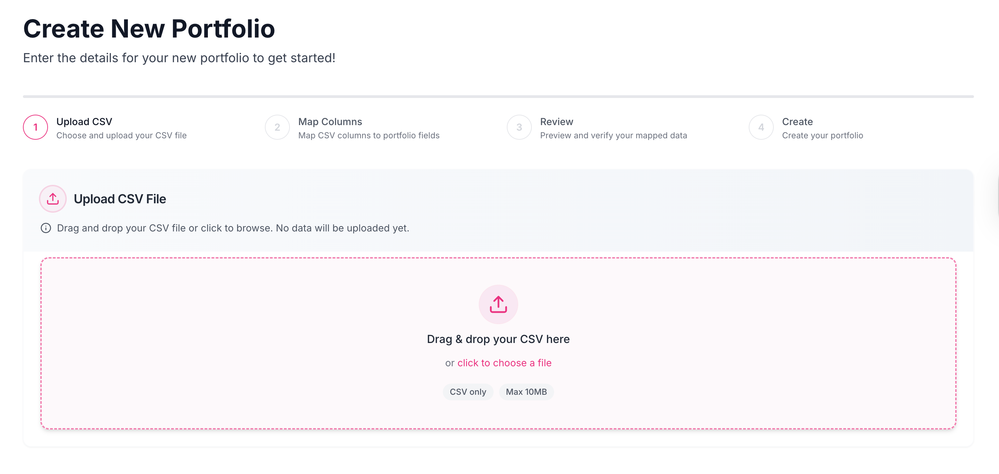
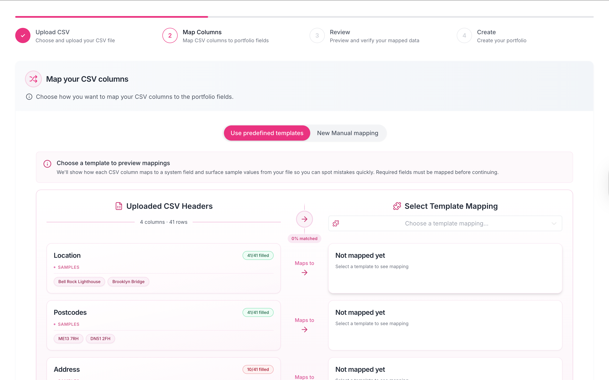
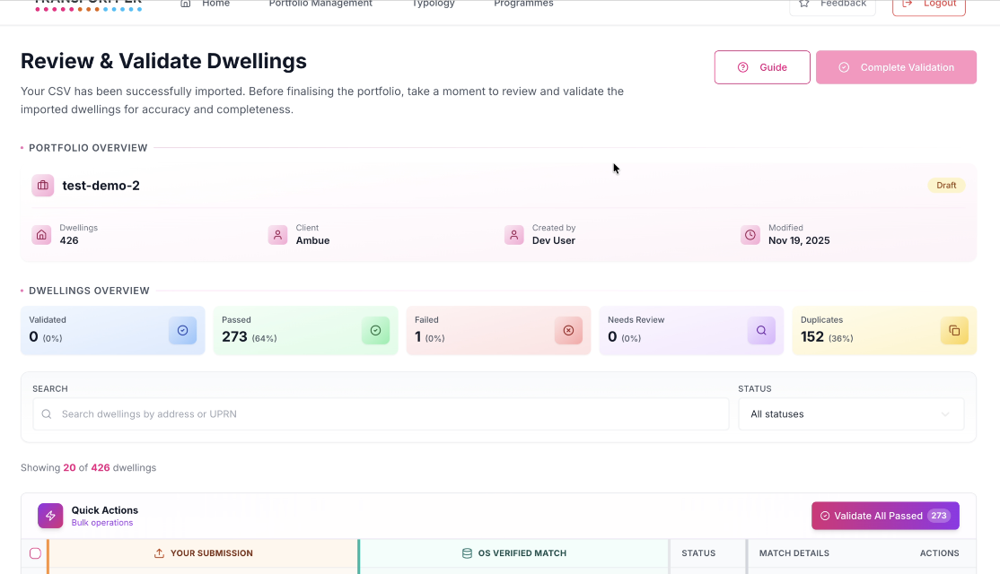
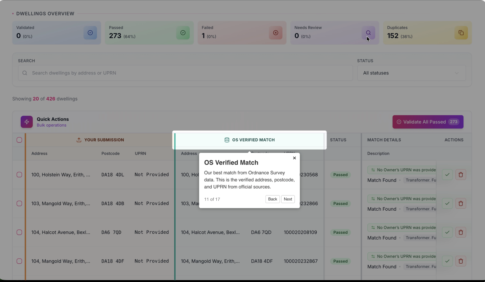

Workflow gallery




The interface moves from file intake to field mapping, record validation, and a finalized portfolio dashboard.
Case study
This flow takes users from upload through mapping, validation, and final dashboard review. The work covered the full React and TypeScript product surface, including upload state, mapping logic, live validation, WebSocket updates, and guided onboarding.




The interface moves from file intake to field mapping, record validation, and a finalized portfolio dashboard.